Tutorials
Step-by-step projects with photos
Hand embroidery stitches
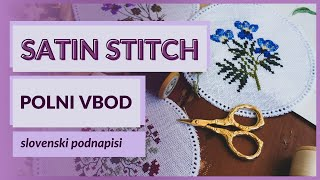
Satin stitch
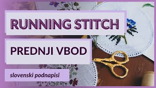
Running stitch
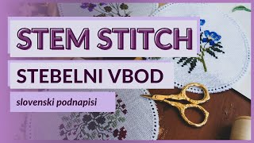
Stem stitch
Chain stitch
Leaf stitch
French knot: 1, 3 and 6 strands
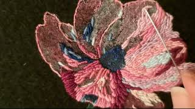
Bullion stitch
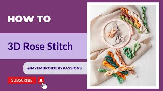
Spider web rose
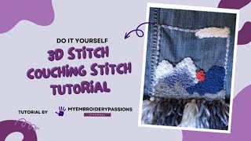
Couching stitch
Cross stitch
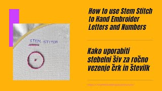
Letters and numbers with stem stitch
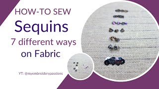
Sequins: 7 ways to sew them on
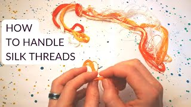
How to handle silk threads
Embroidery on clothes, bags & home
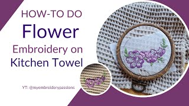
Flowers on a kitchen towel
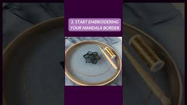
Mandala by hand
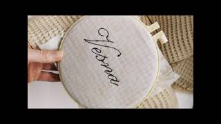
Pattern transfer with water soluble stabilizer
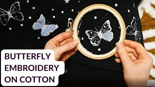
Butterfly on a blouse
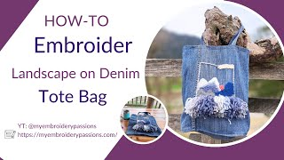
Mountain landscape tote bag from old jeans
Embroidered slippers
Embroidery on paper
Needle felting
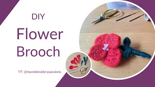
Felted flower brooch
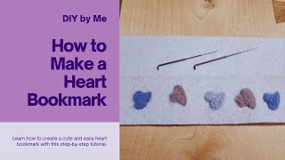
Hearts bookmark
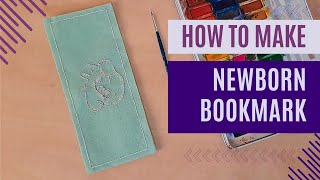
Bookmark for a newborn
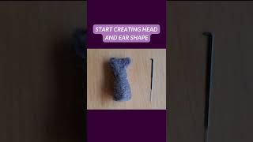